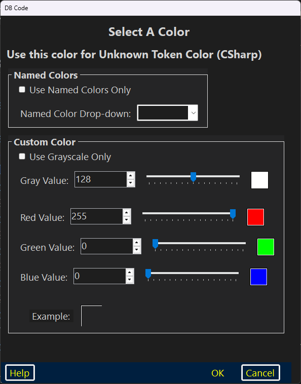

This Color Picker dialog was specifically designed to be Dragon–friendly.

| The Color Picker | |
| The Named Colors GroupBox | The Custom Color GroupBox |
| The Bottom Panel | |
| Other Help Pages | |
The Color Picker
The “Color Picker” has a title: “Select A Color” below which is a label which describes how the color is to be used.
The Named Colors GroupBox
There is a “Use Named Colors Only” CheckBox; when checked, only named colors are available. “Named Colors” consists of about 175 colors; the list is subject to change by addition.
There is a “Named Color Drop–down” ComboBox which contains dictation–friendly versions of all color names (the actual names have no spaces in them). “Named Color Drop–down” is a prefix button with which the user may activate the ComboBox.
The Custom Color GroupBox
There is a “Use Grayscale Only” CheckBox; when checked, only colors which are the grayscale are available. A color is “gray” if all three of its red, green and blue values are equal.
Below that CheckBox are four color clusters (a cluster consists of a prefix button, its associated NumericUpDown, a slider and an example color swatch). There is one each for gray, red, green and blue.
Below the four color clusters is a large example color swatch which will dynamically reflect the color being designed.
The user may activate any of the NumericUpDowns by dictating the name of its associated prefix button. One may then directly dictate any value between 0 and 255 tab out of the ComboBox. Tabbing out will activate the slider which will respond to both left and right arrow keys (either keyboard presses or dictated). All of these controls are dynamically updated — changing the value of the ComboBox will update the associated slider and the associated color swatch; the example swatch will also be updated.
The Bottom Panel
The bottom panel has the three traditional buttons: “Help”; “OK” and “Cancel”.
“Help” brings up context–sensitive help in the user’s preferred browser (this page).
“OK” closes the dialog and immediately applies the color according to the usage.
“Cancel” closes the dialog without applying the color.